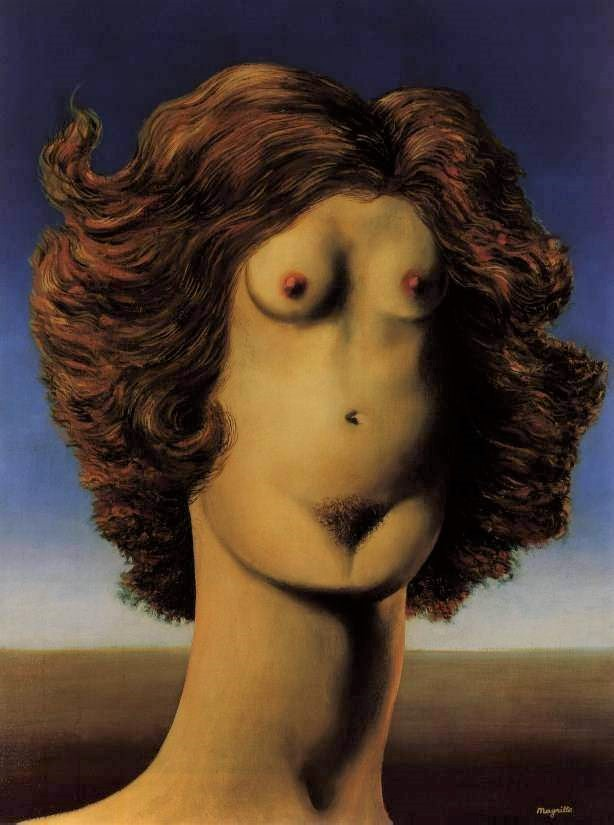

Rene Magritte is a Belgian Surrealist artist who became well known for creating a number of witty and thought-provoking images. Often depicting ordinary objects in an unusual context, his work is known for challenging observers' preconditioned perceptions of reality. His imagery has influenced pop art, minimalist art and conceptual art.
Rene Magritte was an internationally acclaimed surrealist artist of all time, yet it was not until his 50s, when he was finally able to reach some form of fame and recognition for his work. Rene Magritte described his paintings saying, "My painting is visible images which conceal nothing; they evoke mystery and, indeed, when one sees one of my pictures, one asks oneself this simple question, 'What does that mean?' It does not mean anything, because mystery means nothing, it is unknowable."